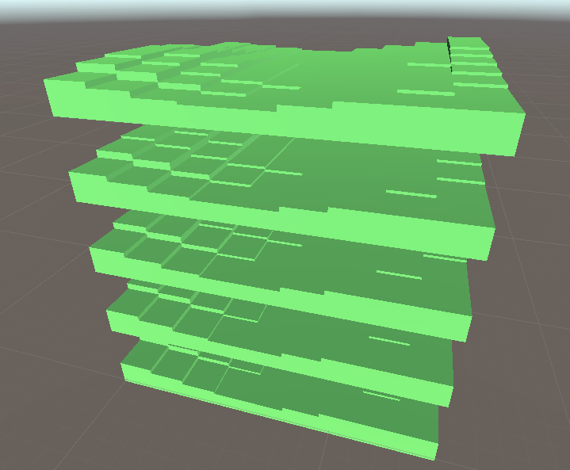
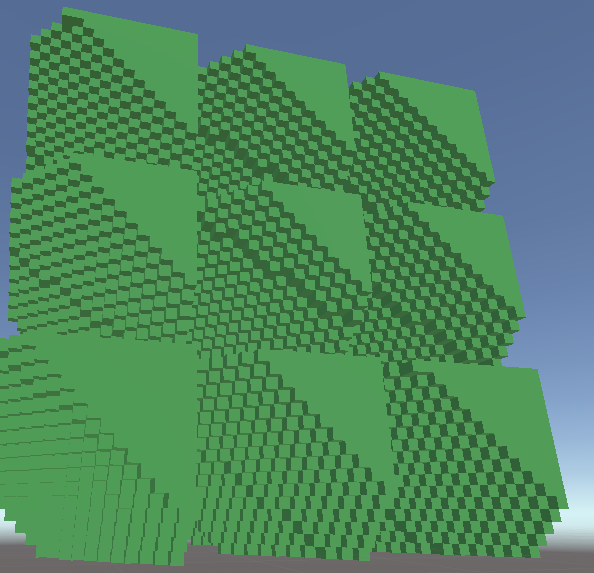
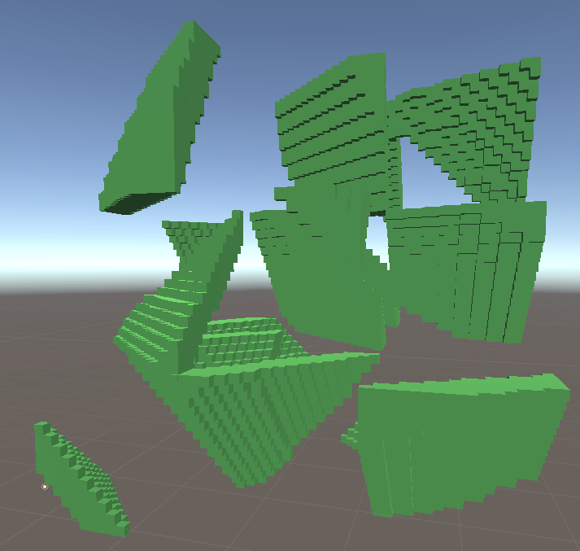
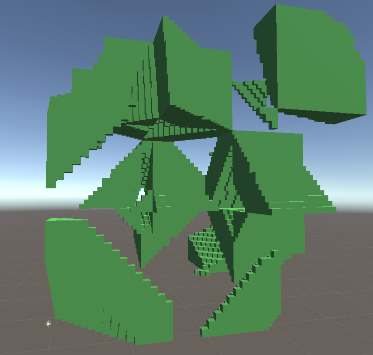
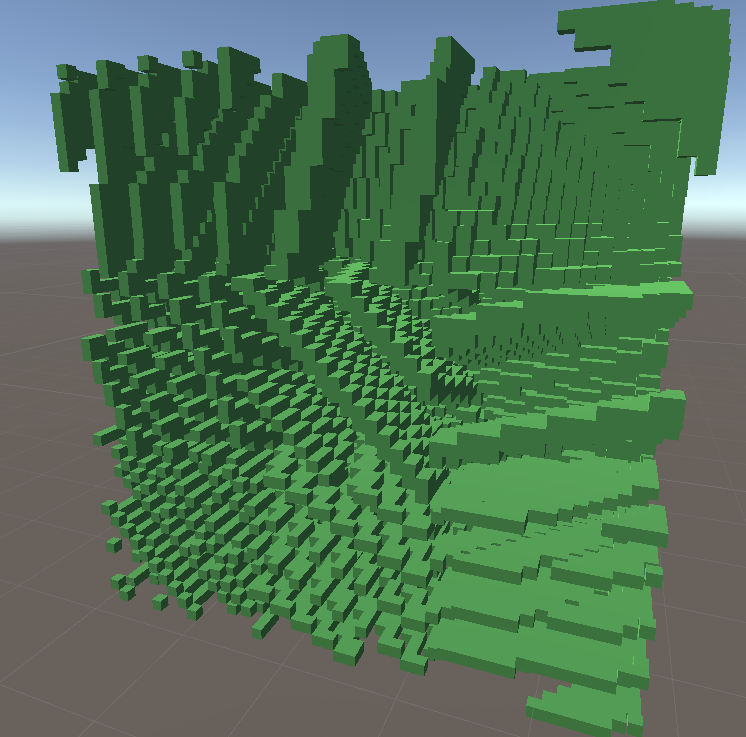

Voxel Engine | Noisy Problems
I added stacking of chunks this week and figured out that my previous "fix" for terrain repeating every chunk didn't actually fix the problem. To fix it I made the constant much smaller constant and redid the function that generated a 2d grid of noise values. This worked well enough, but unfortunately, the same problem of repeating terrain re-appeared later on when I added 3D Perlin Noise.
Stacking layers of chunk:
While the granularity isn't on a per block basis, it is better than before. and no repeating on a single layer.
The reason it repeats, in this case, is that the noise generator is still in 2D. I found a solution online that suggested to use a 3D point and sample 2D Perlin noise for every permutation of that 3D point. This did not have the results that I was hoping for and also reintroduced the repeating terrain problem.
I fixed this issue this time by multiplying by a small constant ( less than 1 ) since whole numbers repeat the same noise function. In other words, using the position of a block will yield the same spot in the noise function.
  Still doesn't quite do what I was hoping for, and more experimenting with the intensity of the noise function seemed to yield the same weird bands in the chunks.
This is where I left off at, I tried debugging in visual studio but for some reason, the debugger doesn't seem to work. Breakpoints don't seem to be able to find the line of code they're attached to. Looking into it, it seems like the symbols are not loaded. While I search for a fix for debugging I will be working on other small projects.
Thanks for reading,
see you in the next one.